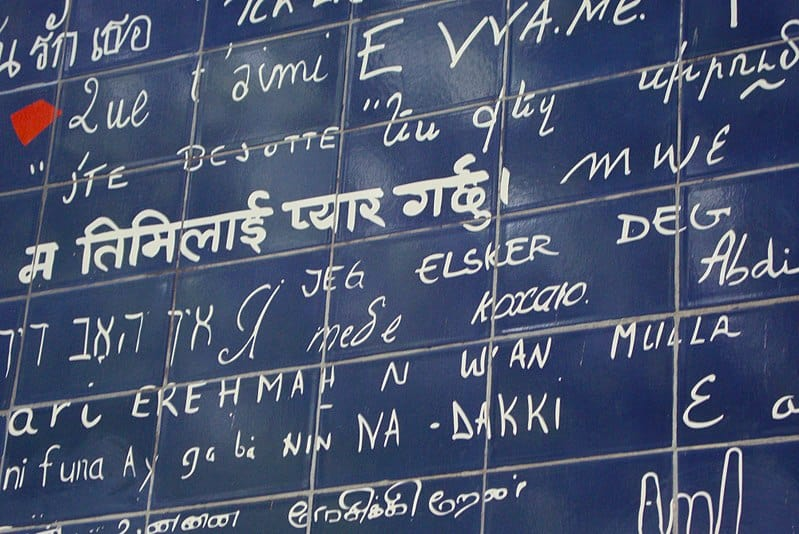
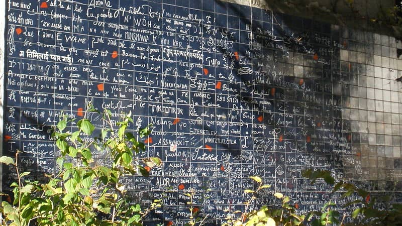
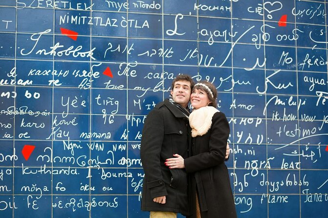
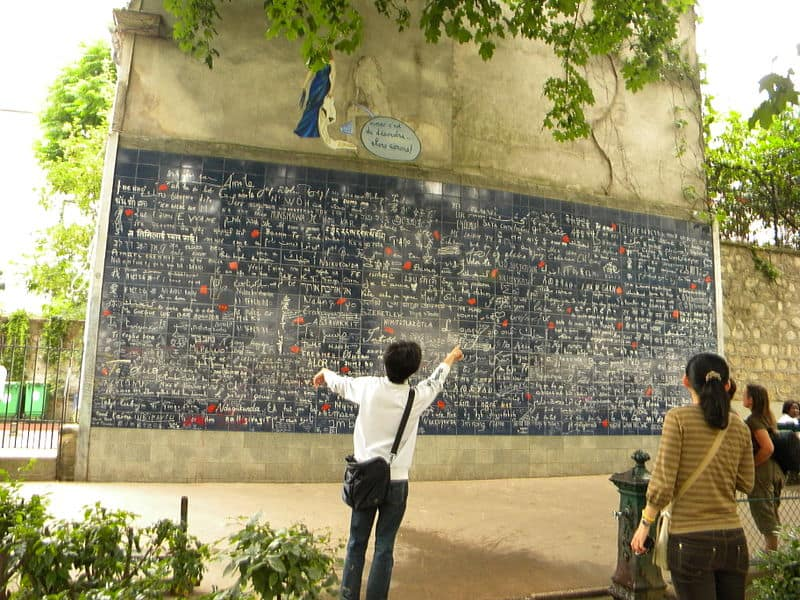
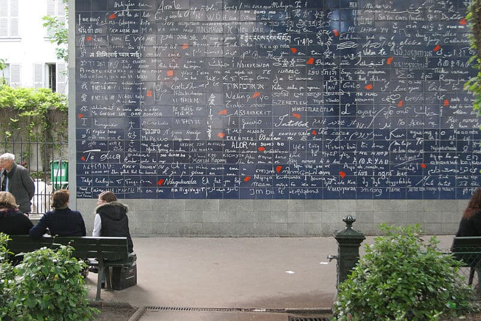
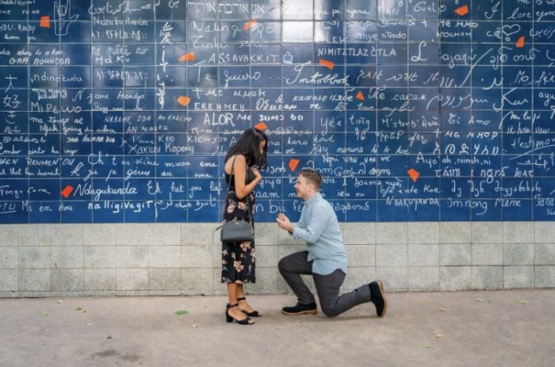

The I Love You Wall is the brainchild of a man named Frédéric Baron. The story goes that back in 1992 he began a personal endeavor to collect all of the different ways that existed in the world by which to say “I love you”. He spent years wandering around Paris with his notebooks, connecting with people from all around the world and inquiring as to how they know to express the phrase. Due to the many variants of dialects per language, it is estimated that Baron was able to collect over 1000 different ways of expressing this simple phrase. Some of his research even lead him to knock on the doors of some of the global embassies in Paris in order to confirm that his findings were true.
What good is a landmark that cant withstand the test of time? Writing on a wall is a precarious element to deal with as even the toughest of paints wither away over long periods of time. The I Love You Wall needed to be able to develop into a permanent landmark in the district of Montmartre in Paris. Not something that would eventually become an eyesore and have to be taken down, like so much of the usual Parisian street art that can’t withstand long periods of sun and rain exposure.
The work and research of Frédéric Baron began in 1992, but the wall itself was only constructed in the year 2000. This gave the artists just over eight years to complete the research phase of his project. His project partner, Claire Kito, is a a calligrapher specialising in Chinese art and characters. Shortly before the year 2000 she took the notebooks that Baron had complied and began turning them into the vibrant, white typography that you see on the wall today. The I Love You Wall in Montmartre was open to the public from the day it was completed. Since then, it has been a visiting hub for thousands of tourists and even locals each year.
Many unknowing visitors and free guided walking tours have passed through this space and been blissfully unaware of some hidden messages going on within the already complicated message board. When standing before the I Love You Wall in Montmartre, take a minute to notice the other elements included in the piece that aren’t centered around words or typography. If you look you’ll see dozens of red specks that seem to be flung haphazardly across the tiles.
The research conducted by Frédéric Baron was never done with the intent for it to turn into a wall installation in Montmartre. It began as a simple passion project, purely for interest, if you will. As the research began to snowball and Baron’s interest in uncovering more and more languages grew, so did the potential for further projects. Baron’s notebooks caught the attention of many a publisher in Paris. It was quickly scooped up by one during the 1990s and turned into a full fledged print version, called The Book of I Love Yous.
The very romantic, whimsical nature of the streets of Montmartre make it one of the most idealistic places in Paris to pop the big question. It is unsurprising that the I Love You Wall has seen its fair share of “will you marry me”s since its inception back in 2000.
